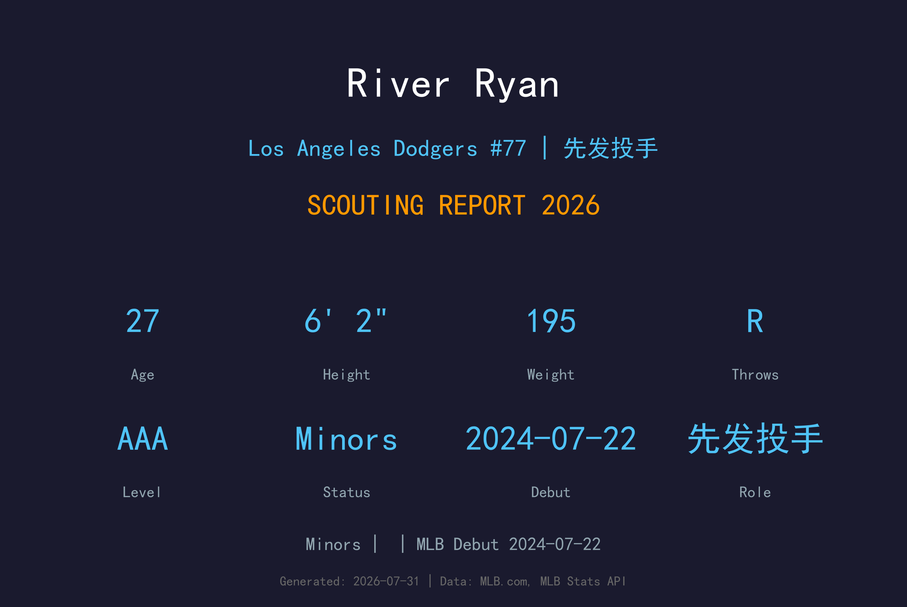
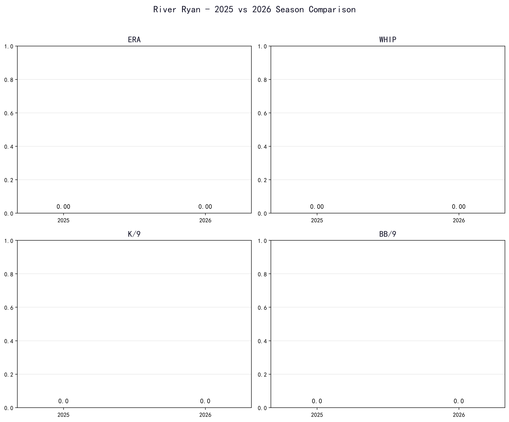
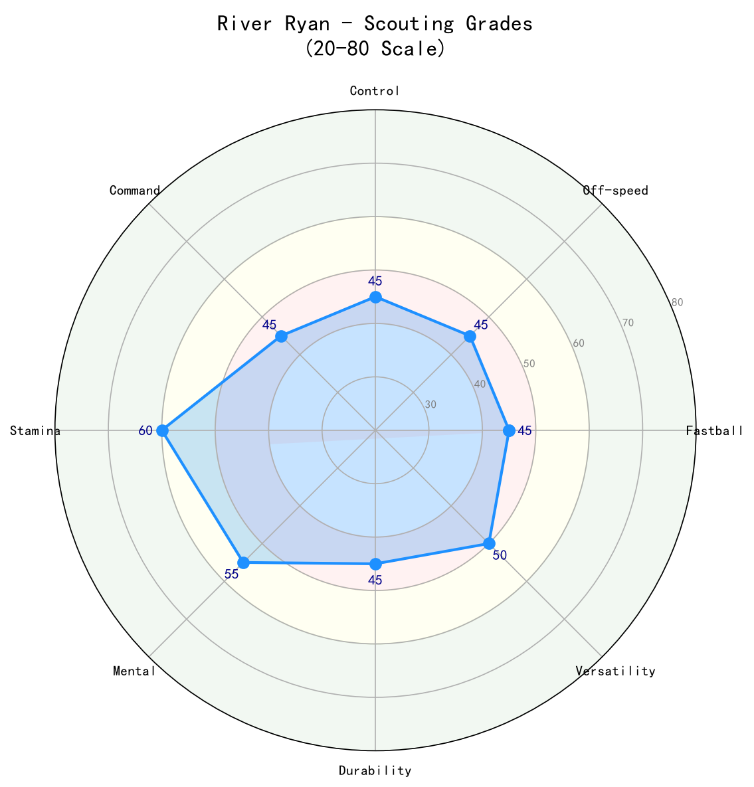

Los Angeles Dodgers #77 | 投手 | Minors

River Ryan 是道奇农场中一位独特的发展案例：他原本是内野手，后来转型为投手，并凭借其运动能力与手臂天赋快速上升。2024 年他完成大联盟首秀，但 2026 年他主要在 3A Oklahoma City 调整，尚未回到大联盟。Ryan 拥有不错的速球与变化球潜力，但转型投手的时间较短，控球与耐力仍在持续进步中。27 岁的他需要在近期证明自己能稳定吃局数，否则可能在道奇深厚的农场中被其他新秀超越。
River Ryan 于 2024-07-22 登上大联盟，开始在高水平舞台展现自己的实力。
River Ryan 目前位于道奇小联盟体系，是球队长期深度规划的一部分。
2026 年大联盟样本有限，数据主要参考小联盟与过往表现。

📈 上图为近三年核心数据趋势。柱状图高度代表该年度表现，便于快速比较球员状态的上升或下滑。
主战球种，占全部配球的 39.0%，均速 96.8 mph。直上直下的四缝线速球，负责抢好球数与建立球数领先，是所有配球的基准。
常用武器，占全部配球的 18.3%，均速 90.6 mph。传统滑球横向位移锐利，是两好球后的主要挥空武器。
辅助配球，占全部配球的 12.2%，均速 89.7 mph。变速球靠与速球的速差取命，主要用来对付反侧打者。
辅助配球，占全部配球的 11.0%，均速 93.6 mph。卡特球介于速球与滑球之间，球尾小幅横移，用于破坏打者节奏与制造软弱击球。
辅助配球，占全部配球的 9.8%，均速 82.5 mph。曲球落差大，用于改变打者视线高度与击球节奏。
辅助配球，占全部配球的 9.8%，均速 94.8 mph。伸卡球下沉明显，主要用于制造滚地球、压低长打率。

| 项目 | 评分 (20-80) | 等级 |
|---|---|---|
| 速球 | 55 | B |
| 滑球 | 50 | B- |
| 变速球 | 45 | C+ |
| 控球 | 40 | C |
| 耐力 | 45 | C+ |
| 天花板 | 50 | B- |
River Ryan 是道奇农场中一张"彩票"。他的运动天赋与手臂速度令人期待，但能否成为稳定大联盟投手仍取决于未来 1-2 年的控球与耐力发展。
C+ 级 / 转型中的投手新秀
*⚾ 洛杉矶道奇队球探报告*
River Ryan 的背景故事与生涯轨迹详见职业生涯亮点与球探分析。